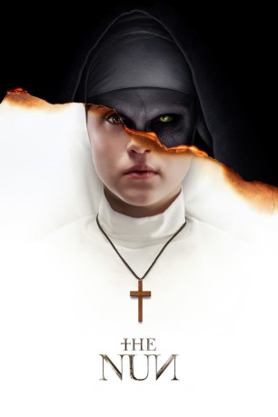

#10047 The Nun
 gesehen am 26.11.2018
gesehen am 26.11.2018
 
 IMDB-Wertung: 5.6 / 10
IMDB-Wertung: 5.6 / 10  Metascore: 46
Metascore: 46 
Im Mittelpunkt steht der fiese Nonnen-Dämon Valak. In den 50ern wird Father Burke auf dessen Spur angesetzt, als ihm seine Vorgesetzten im Vatikan den Auftrag erteilen, den mysteriösen Tod einer Ordensschwester zu untersuchen. Sie nahm sich in einem abgelegenen rumänischen Kloster das Leben. Burke, durch seine Vergangenheit tief traumatisiert, wird von der Novizin Irene begleitet, die bald ihr Ordensgelübde ablegen soll. Zusammen erforschen sie das schreckliche Geheimnis des Klosters...
BDRIP DUBBED
Jahr: 2018
Dauer: 96 Minuten
FSK: 16
Land: USA Studio: Warner Bros.Tonspuren: DD5.1 - ,
Untertitel: Deutsch,
Auflösung: 1080p (1920x800) Größe: 8273 MB
Genre: Thriller, Horror, Mystery
Regisseur: Corin Hardy
Drehbuch: Gary Dauberman, James Wan, Gary Dauberman
Soundtrack: Abel Korzeniowski
Darsteller:
 Demián Bichir als Father Burke
Demián Bichir als Father Burke Taissa Farmiga als Sister Irene
Taissa Farmiga als Sister Irene Jonas Bloquet als Frenchie
Jonas Bloquet als Frenchie Bonnie Aarons als The Nun
Bonnie Aarons als The Nun- Ingrid Bisu als Sister Oana
 Charlotte Hope als Sister Victoria
Charlotte Hope als Sister Victoria- Sandra Teles als Sister Ruth
- August Maturo als Daniel
- Jack Falk als Daniel
- Lynnette Gaza als Mother Superior
- Ani Sava als Sister Jessica
 Michael Smiley als Bishop Pasquale
Michael Smiley als Bishop Pasquale David Horovitch als Cardinal Conroy
David Horovitch als Cardinal Conroy- Tudor Munteanu als Grigore
- Lili Bordán als Waitress - Marta
- Scarlett Hicks als Scarlett
- Izzie Coffey als Student
- Jared Morgan als Marquis
- Laur Dragan als Villager
- Ana Udroiu als Praying Nun
 Dee Bradley Baker als Demonic Voice
Dee Bradley Baker als Demonic Voice Debra Wilson als Demonic Voice
Debra Wilson als Demonic Voice Mark Steger als Duke
Mark Steger als Duke- Lidiya Korotko als Barmaid
- Emma Appleton als Elena (uncredited)
 Jonny Coyne als Gregoro (uncredited)
Jonny Coyne als Gregoro (uncredited)- Natalie Creek als 1950's Catholic School Girl (uncredited)
- Flynn Hayward als Sister Samantha (uncredited)
- Daniel Mandehr als Farmer Jozef (uncredited)
- Samson Marraccino als Timothy (uncredited)
- Lourdes Nadres als Nun (uncredited)
 Simon Rhee als Holy Man 1 (uncredited)
Simon Rhee als Holy Man 1 (uncredited) Sandra Rosko als Captured Nun (uncredited)
Sandra Rosko als Captured Nun (uncredited)- HayRae Rummel als Catholic School Girl (uncredited)
- Gabrielle Downey als The Abbess
- Eugeniu Cozma als Villager
- Manuela Ciucur als Sister Christine
- Beatrice Péter als Praying Nun
- Andreea Sovan als Praying Nun
- Dana Voicu als Praying Nun
- Andreea Moldovianu als Praying Nun
- Beatrice Rubica als Praying Nun
- Claudia Susanu als Praying Nun
- Boiangiu Alma als Demonic Nun
- Gabriela Irina Dinca als Demonic Nun
- Jamie Muscato als Father Patino (uncredited)
- Claudio Charles Schneider als Demon (uncredited)
Datei: X:\6-Hexalogie(A-Z)\Conjuring - Annabelle - Nun\Nun, The (2018, FSK16, 1920x800).mkv seit 21.11.2018
Festplatte: HD Collection-3(N-Z)-6(A-Z)
 Es gibt insgesamt 9 Filme in der Gruppe '6-Hexalogie(A-Z)\Conjuring - Annabelle - Nun'
Es gibt insgesamt 9 Filme in der Gruppe '6-Hexalogie(A-Z)\Conjuring - Annabelle - Nun'